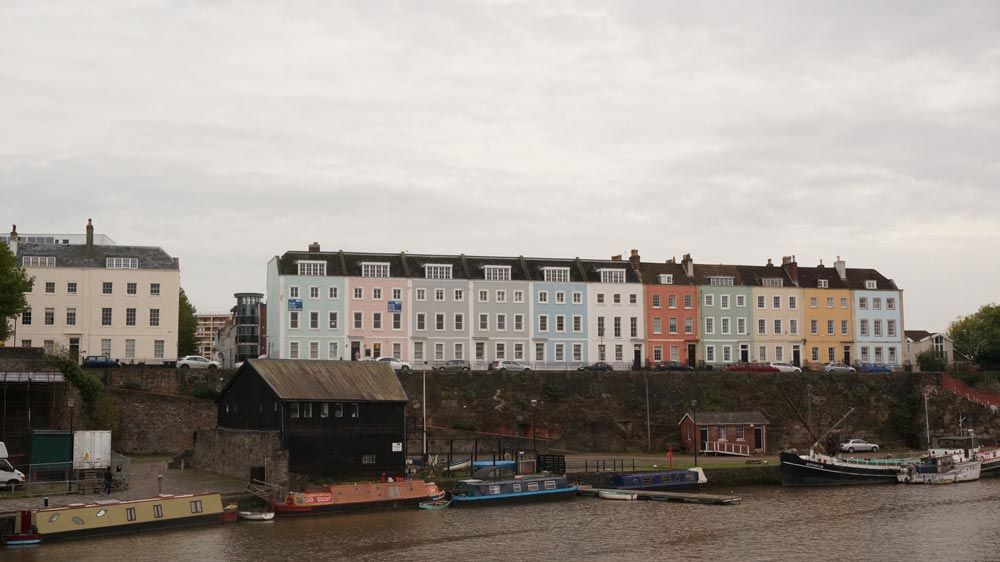
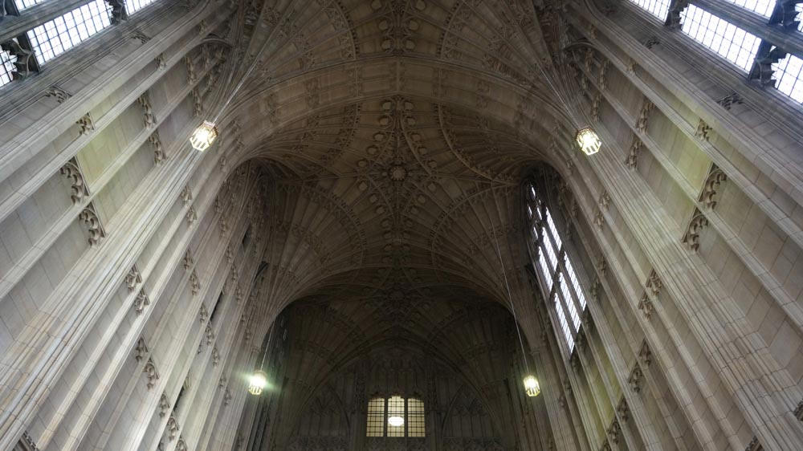
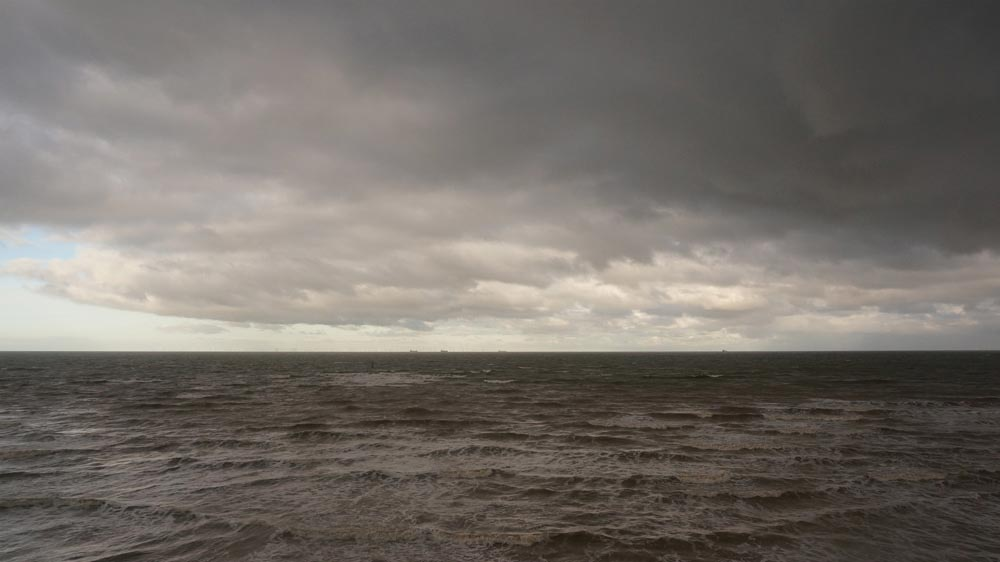
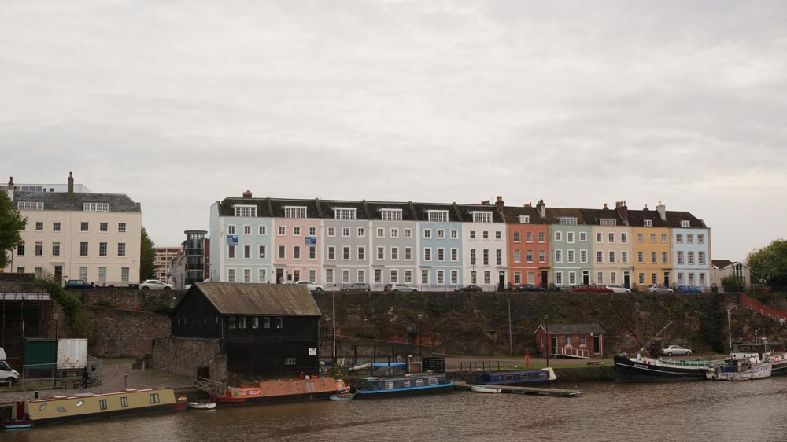
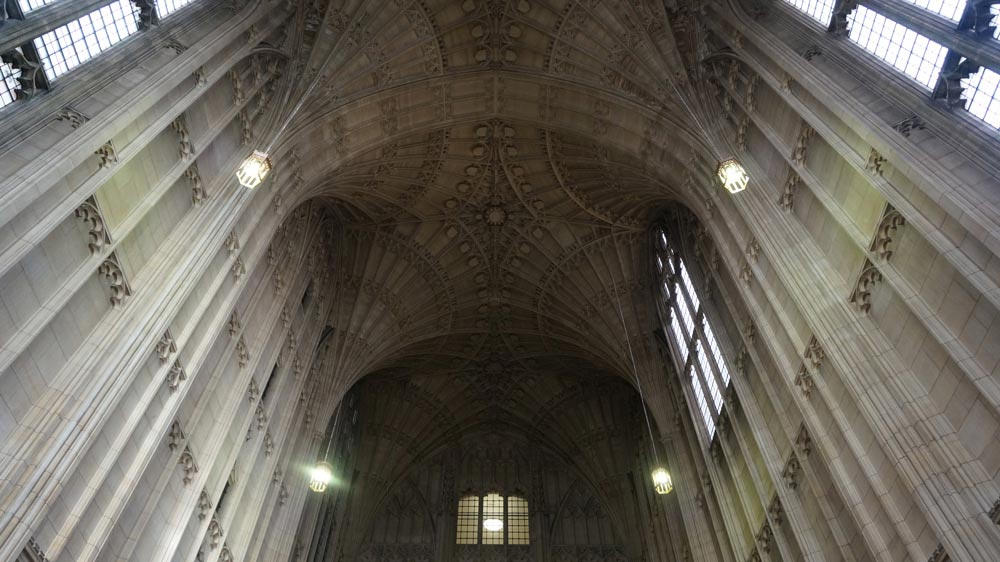
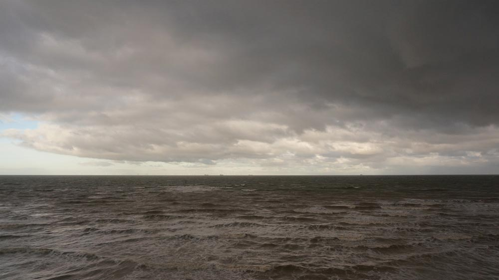

To be honest, I’d be hard pressed to say much about London. To refer to the city as a single entity is fairly intimidating for me, so I’d rather just talk about my first hand experiences. I believe my reflections can be understood with the minimal context of the popular idea of London.
I was based primarily in East London. From my understanding it’s a pretty diverse area. My closest surroundings was mostly commissioned housing which sounds grim. It definitely wasn’t Mayfair or Park Lane but for a student it felt entirely appropriate.
Some of my most rewarding and influential experiences were spent just outside of London. I travelled to these places without secondhand ideas or opinions. They weren’t expensive destinations, and it never felt like there was much to lose by going there. Because of this, I didn’t feel pressured to ‘get something out of the experience’. These day trips were unassuming and permitted me to approach the time with a more open mind, inevitably taking away a more personal observance.
It’s funny, you form your opinion about somewhere. You have a glowing impression of it. Then you speak to anyone else and they all say how shit it is. This demonstrates my point that without a bias, you’re more inclined to focus on what matters to you. And for me, I was particularly drawn to: the infusion of geometry and composition in the way architecture would engage with negative space; and imagining about what it would be like to live there.